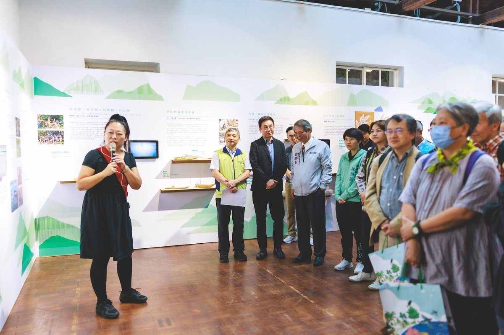

竹帆船泊松園月桃端上桌 豐濱五部落藝術說自然

可樂電子報小編/編輯
竹藤不只在深山，也能綁成航海帆船；月桃不只用來裹粽，更能化身風味味噌醬與精釀糖漿。林業及自然保育署花蓮分署即日起至11月22日在松園別館盛大舉辦「用藝術說自然的話－森川里海藝術創生成果展」，集結豐濱鄉磯崎、新社、復興、貓公及港口五個部落，將部落山海日常淬鍊為繪本、傳統工藝、影像紀錄與創意料理。

林業保育署署長林華慶指出，花蓮分署自107年起推動「森川里海藝術季」，透過藝術創生計畫，結合部落耆老深度訪談、田野調查、藝術家駐地創作及在地青年培力，成功讓珍貴的部落生態知識走進當代藝術，緊密串連文化傳承、自然保育與地方永續產業。

這場展覽讓部落故事不僅可讀、可看，更能親口品嘗。復興部落耆老與藝術家王秀茹攜手共創《從山下走上山》繪本，詳實記錄遷徙與拓墾歷程；藝術家羅婕如以豐濱土壤實驗礦泥染與天然顏料，結合貓公部落陶藝開發特色顏料盤；馬來西亞生態廚師Pison Jaujip更與復興部落研發月桃味噌醬與辣椒醬，為熟悉植物端出驚艷滋味。

松園別館前庭展示的一艘傳統竹帆船格外吸睛。港口部落林清進頭目帶領三個部落中生代與青年，運用竹、藤及山芙蓉等天然素材，從取材處理到精巧綁船，一步步重拾航海傳統技藝。此外，盧建銘老師帶領學生共建阿美族taloan傳統聚會空間；阿尼瑪動畫與藝術家王荷瑄陪伴港口國小學童創作的《來自羽的訊息》動畫，更榮獲2026新北市學生影像新星獎。

花蓮分署分署長黃群策強調，守護生物多樣性，必須珍視人與自然長期互動所累積的地方智慧。分署未來將持續攜手部落、學校及藝術家，促進文化傳承與生態保育共生共榮。展覽期間另規劃手作工作坊與深度部落文化旅行，熱情邀請各界民眾走進松園別館，細細品讀豐濱豐富動人的山海故事。

📸 更多現場紀實影像